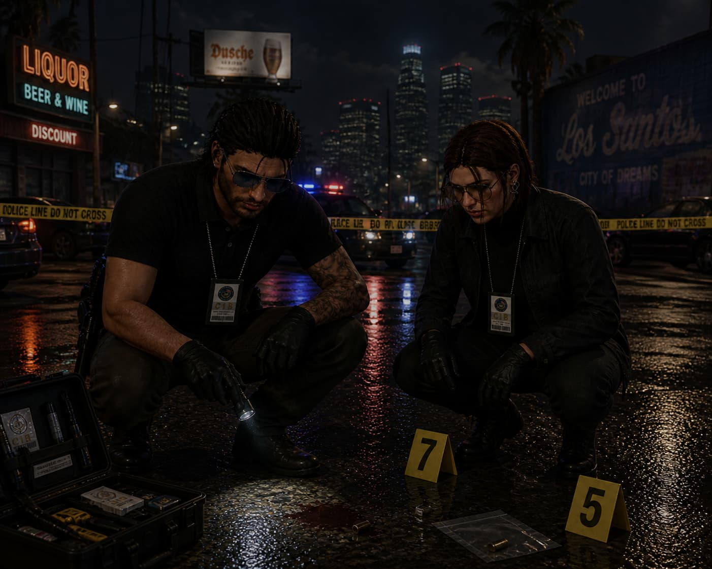
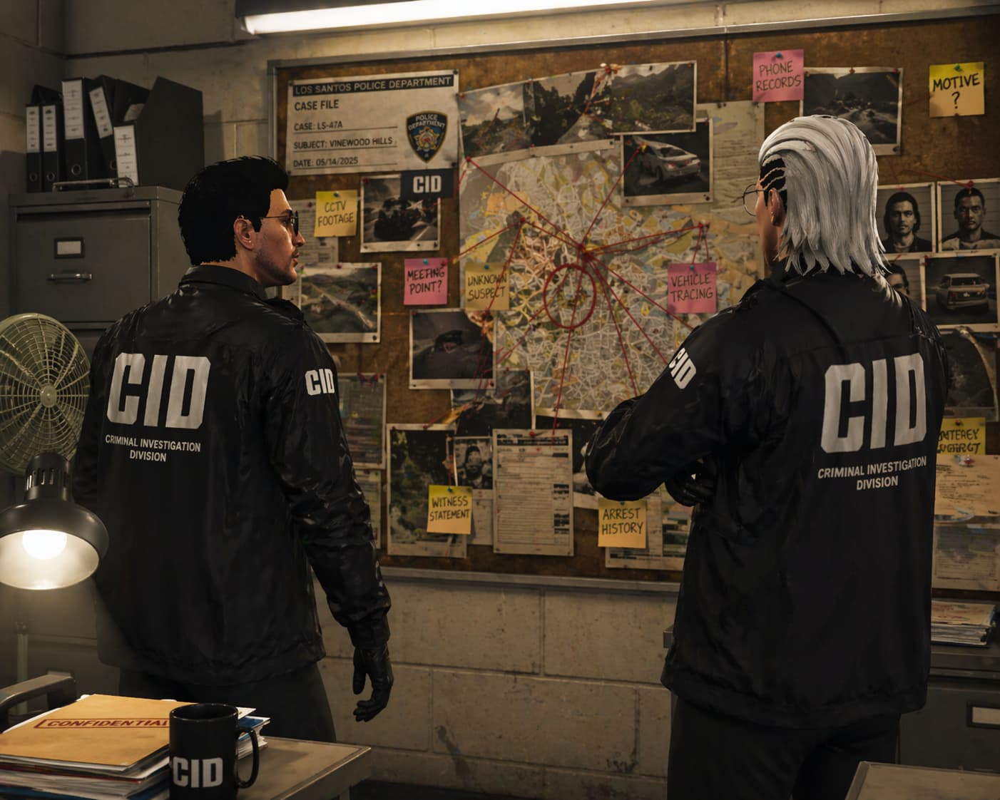

Sub-Division · Criminal Investigation
C.I.D
Criminal Investigation Division
Division Seal
"The end justifies the means"
The Criminal Investigation Division is the backbone of CIB's prosecutorial power. CID agents handle the State's most complex and high-profile criminal cases — including organized crime networks, financial fraud, homicide, and major felonies. Every case is built meticulously from the ground up: from the first tip to the final courtroom verdict. CID does not act on assumption — it acts on proof.
01
Homicide & Major Crimes
Full-scope investigation of murders, violent assaults, and high-profile felonies. CID coordinates evidence collection, forensics review, and suspect profiling from scene to courtroom.
02
Financial Crime & Fraud
Investigation of money laundering operations, shell companies, illegal wire transfers, and organized financial corruption networks operating within San Andreas.
03
Witness Protection & Informant Management
Maintaining a secure and confidential network of informants and protected witnesses who provide critical intelligence to break open criminal operations.
04
Court Liaison & Evidence Management
Preparing prosecution-ready case files, managing chain-of-custody for all evidence, and coordinating directly with the DA's office to ensure convictions hold.


CIB · CRIMINAL INVESTIGATION DIVISION · CLASSIFIED OPERATIONS